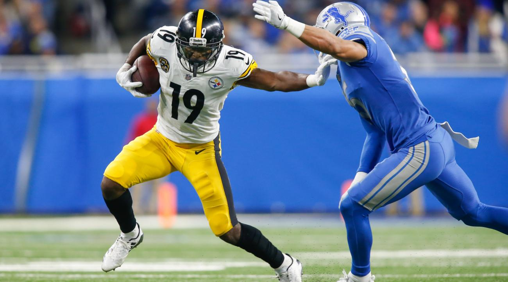
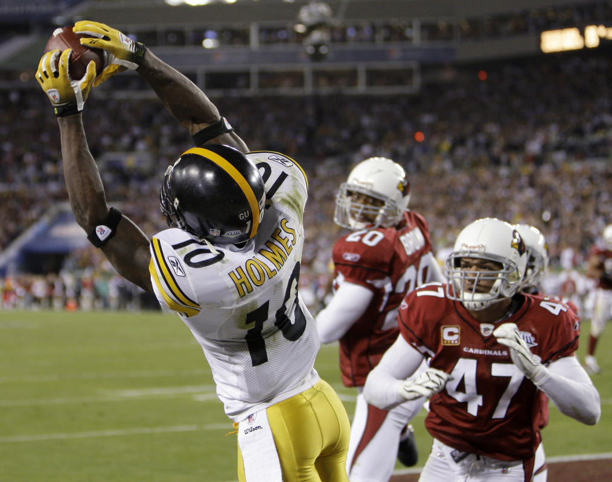

Rookie News
This year the Steelers picked up 8 players in this year's draft. One rookie included in this list, JuJu Smith-Schuster, is the youngest rookie in the League. He currently has 521 yards, 29 receptions, and 5 touchdowns in the 9 games the Steelers have played this season. Another rookie the Steelers picked up is the inspirational success story of James Conner. Conner played as a star running back in college for the Pittsburgh Panthers until his junior he was diagnosed with Hodgkin's lymphoma. Conner persevered and overcame cancer to get picked up in the 105th round by the Pittsburgh Steelers. He currently has 101 yards, with 19 carries, with an average of 5.3 yards.
Play-off Run
The Steelers are currently one of the 12 teams with playoff hopes still within reason. The Steelers are currently 9-2 and leading the AFC North division. Beating out the Baltimore Ravens, Cincinnati Bengals, and the Cleveland Browns for the top spot in the division. This is not uncommon for the Steelers however, because they have won their division 22 times they have the most playoff apperances with 30 times, and they have won 6 out of the eight Super Bowl apperances. Out of those ten times visiting the playoffs they have played in the Super Bowl.
| Date | Opponent | Location | Result/Time |
|---|---|---|---|
| 9/10 | Cleveland Browns | First Energy Stadium | Win |
| 9/17 | Minnesota Vikings | Heinz Field | Win |
| 9/24 | Chicago Bears | Soldier Field | Loss |
| 10/1 | Baltimore Ravens | M&T Stadium | Win |
| 10/8 | Jacksonville Jaguars | Heinz Field | Loss |
| 10/15 | Kansas City Chiefs | Arrowhead Stadium | Win |
| 10/22 | Cincinnati Bengals | Heinz Field | Win |
| 10/29 | Detroit Lions | Ford Stadium | Win |
| 11/12 | Indianapolis Colts | Lucas Oil Stadium | Win |
| 11/16 | Tennessee Titans | Heinz Field | Win |
| 11/26 | Green Bay Packers | Heinz Field | Win |
| 12/4 | Cincinnati Bengals | Paul Brown Stadium | Win |
| 12/10 | Baltimore Ravens | Heinz Field | 8:30pm |
| 12/17 | New England Patriots | Heinz Field | 4:25pm |
| 12/25 | Houston Texans | NRG Stadium | 4:30pm |
| 12/31 | Cleveland Browns | Heinz Field | 1:00pm |